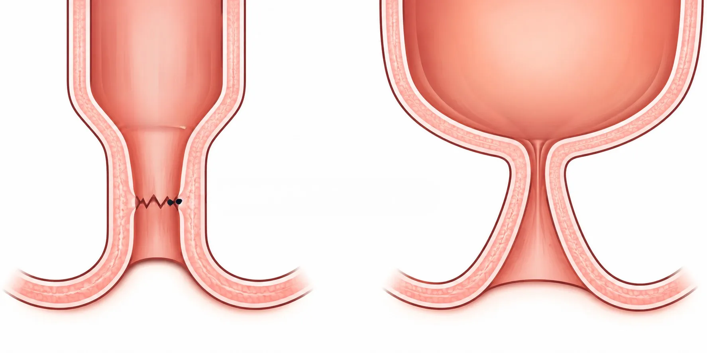

Anal stenosis, also called anal stricture, is a narrowing of the anal canal. It makes passing stool difficult and painful, and the stool may become thin.
Dr. Pradipkumar Tupere, a proctologist and general surgeon at Navoday Clinic in Kharadi, Pune, examines you first, looks for the cause and explains your options. Mild narrowing may be managed without major surgery, and the right treatment depends on how narrow the canal is and why it formed.
At a glance
| Topic | In brief |
|---|---|
| What it is | A narrowing of the anal canal caused by scar tissue or disease. |
| Common signs | Hard or painful passage of stool, thin stools, straining and a feeling that the bowel has not emptied. |
| Common causes | Scarring after anal surgery, a long-standing fissure, inflammatory bowel disease, injury or radiation. |
| See a doctor if | Stools turn thin or passing stool becomes harder, especially after anal surgery. |
| Who treats it | A proctologist or a general surgeon who treats anorectal conditions. |
| Where | Navoday Clinic, Kharadi, Pune |
Symptoms of anal stenosis
Symptoms build up slowly, often weeks or months after the cause, such as surgery or a long-standing fissure.
- Hard stools that are difficult or painful to pass, with a need to strain.
- Thin, ribbon-like or pencil-thin stools.
- Constipation, or a feeling that the bowel has not emptied.
- Pain or a little bleeding during a bowel movement.
See a doctor soon if
- Your stools have become thin, or passing stool is getting harder, particularly after piles or other anal surgery.
- A fissure keeps coming back.
- There is bleeding, a change in bowel habit or weight loss, because other causes of narrowing must be ruled out.
- You cannot pass stool or gas, your abdomen is swollen and painful, or you are vomiting. In this situation, go to an emergency department.
Narrowing has several causes, so it should be examined and not treated with laxatives alone.
Why anal stenosis happens
Anal stenosis develops when scar tissue or disease makes the anal canal tighter. Causes include:
- Scarring after anal surgery, most often after piles surgery, when too much of the anal lining is removed or healing is poor.
- A long-standing fissure or repeated infection.
- Inflammatory bowel disease, such as Crohn's disease.
- Radiation treatment, injury or infection.
- Rarely, a growth that narrows the canal, which the doctor rules out.
Why technique matters
Narrowing after piles surgery is uncommon when the procedure is chosen and planned carefully and enough healthy anal lining is kept. This is one reason the choice of procedure for piles matters.
How anal stenosis is diagnosed
Diagnosis starts with your story and a gentle examination. The aim is to find the cause and to see how tight the canal has become.
01
Your history
Dr. Tupere asks when symptoms began, whether you have had anal surgery, and about your bowel habits, laxative use and other illnesses.
02
Examination
He gently checks how easily the canal admits a finger or a small instrument. If this is too painful, an examination under anaesthesia may be considered.
03
Further tests when needed
To rule out other causes of narrowing, he may advise a colonoscopy or a flexible sigmoidoscopy, and a biopsy if the tissue looks unusual.
Doctors usually describe the narrowing as mild, moderate or severe, and this guides the treatment plan.
Anal stenosis treatment options, chosen after examination
Treatment depends on how narrow the canal is, what caused it and how long it has been present. Dr. Tupere advises the right option only after examining you.
Without a procedure
Mild narrowing is often managed with fibre, water and stool softeners that keep the stool soft. Gentle, regular dilatation, which means stretching the canal with lubricated dilators, may help keep it open when taught and supervised by the doctor. Do not dilate on your own, because it can injure the area.
General guide by severity
| Severity | What it means | Approaches usually considered |
|---|---|---|
| Mild | The canal is slightly tight and stools are a little thin. | Diet, stool softeners and supervised dilatation. |
| Moderate | The canal is clearly tight and passing stool is painful. | A dilatation programme, sometimes with a procedure to release a tight muscle. |
| Severe | The canal is very narrow, often with scar tissue. | Surgical correction with a skin flap (anoplasty). |
This is a general guide only. The final treatment depends on the examination and individual clinical findings.
Procedures
- Dilatation: The canal is stretched with graded dilators, in the clinic or under anaesthesia, and the sessions are usually repeated over several weeks.
- Internal sphincterotomy: A small cut in the internal sphincter muscle releases a tight muscle that is adding to the narrowing.
- Anoplasty: Scar tissue is released and a flap of healthy skin is brought into the canal to widen it.
Each procedure has its own suitability, risks and recovery. Treatment may take several visits, and narrowing can return. Dr. Tupere explains these factors before you decide.
Consult Dr. Pradipkumar Tupere for anal stenosis
Dr. Pradipkumar Tupere is a proctologist and general surgeon with an MBBS and an MS in General Surgery. He treats conditions of the anus and rectum, including piles, fissures and fistulas, so he sees both the causes of narrowing and its results.
What to expect at your visit
- Book: Call, message on WhatsApp or use the form. We confirm your appointment slot.
- Bring: Any earlier reports, details of any anal surgery you have had, a list of the medicines and laxatives you take, and your questions.
- Consultation and examination: Dr. Tupere listens to your symptoms and examines you. Because the area can be tender, he explains each step and can pause the examination if needed.
- Your plan: He explains your diagnosis and your options. Treatment often takes several visits, especially if dilatation is advised, and not every visit leads to an operation.
If a procedure is advised: You are guided through preparation, the procedure and recovery. The type of anaesthesia, recovery time and follow-up schedule depend on the procedure and your individual condition.
Anal stenosis: frequently asked questions
There is no difference. Both terms describe a narrowing of the anal canal, and doctors use them for the same condition.
It can, although it is uncommon when the procedure is chosen and planned carefully and enough healthy anal lining is kept. Scarring is the usual cause. If your stools become thin or painful to pass after any anal surgery, tell your surgeon early.
A fissure is a small tear and piles are swollen veins, while stenosis is a tight, narrowed canal. A long-standing fissure can lead to stenosis, and so can scarring after surgery. An examination tells them apart.
Mild narrowing is often managed with fibre, water, stool softeners and supervised dilatation. A tighter canal may need a procedure. Dr. Tupere advises after examining you.
Scar tissue does not usually soften by itself, and the narrowing can slowly get worse without treatment. Early treatment is simpler, so see a doctor if your stools become thin or harder to pass.
Dilatation can be uncomfortable, so the doctor adjusts it to your comfort and may use a numbing gel or anaesthesia. A course usually takes several sessions over a few weeks.
Yes, it can, especially if the cause continues, so follow-up visits and soft stools matter. Dr. Tupere explains the chance of it coming back in your case.
The cost depends on how narrow the canal is, whether you need dilatation or a procedure, the type of anaesthesia and the facility used. A fixed price cannot be given before an examination, so Dr. Tupere explains the plan and the expected cost at your consultation.
You can consult Dr. Pradipkumar Tupere, a proctologist and general surgeon at Navoday Clinic, Kharadi, Pune, for anal stenosis evaluation and appropriate treatment guidance.
Dr. Pradipkumar Tupere, proctologist and general surgeon at Navoday Clinic, Kharadi, Pune, can assess anal stenosis symptoms and recommend suitable treatment based on the severity of the condition.